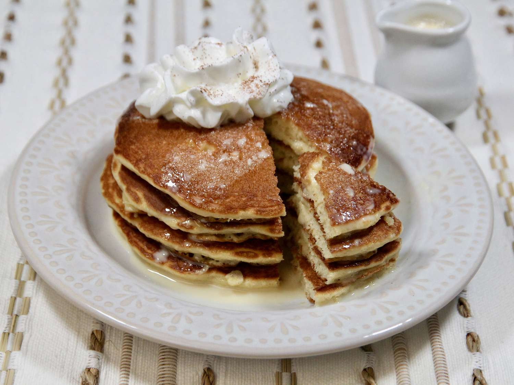

Tres Leches Pancakes

Description:
Tres Leches Pancakes are a delectable twist on the classic pancake breakfast, incorporating the flavors and richness of the popular Latin American dessert, Tres Leches Cake. These pancakes are characterized by their exceptional moistness and sweetness, making them a true indulgence for those with a sweet tooth. To create Tres Leches Pancakes, traditional pancake batter is infused with a mixture of three types of milk—evaporated milk, sweetened condensed milk, and regular milk. This trifecta of milks gives the pancakes their name, as "Tres Leches" translates to "three milks" in Spanish.
Once cooked, the pancakes are generously soaked in a sweet and creamy sauce made from the same trio of milks, which imbues them with a luscious, melt-in-your-mouth quality. The result is a stack of pancakes that is both incredibly tender and saturated with the flavors of the creamy, milky sauce. Tres Leches Pancakes are typically topped with whipped cream and fresh berries or sliced fruits, adding a delightful contrast of textures and a burst of freshness to the overall sweetness. These pancakes are a delightful treat for those looking to elevate their breakfast experience or indulge in a dessert-inspired morning meal.
Ingredients:
Sauce
- 2/3 cup sweetened condensed milk
- 1/2 cup evaporated milk
- 1/3 cup half and half
Pancakes
- 1 (15.25 oz) box French vanilla cake mix (such as Betty Crocker™ Super Moist French Vanilla Cake Mix)
- 1 1/4 cups almond milk
- 3 large eggs, lightly beaten
- 4 tablespoons vegetable oil, divided
- 1/2 cup whipped cream, or as needed (optional)
- 1/4 teaspoon ground cinnamon, or as needed (optional)
Steps:
- Combine sweetened condensed milk, evaporated milk, and half and half in a small saucepan and set over medium heat. Bring to a boil, stirring constantly for 3 to 4 minutes. Remove from heat and let cool. This is a sauce, not a syrup, so consistency will be on the thinner side.
- Add cake mix, almond milk, eggs, and 3 tablespoons vegetable oil to a large bowl, and beat vigorously by hand for 2 minutes.
- Heat a large skillet or griddle over medium heat, and lightly coat with remaining vegetable oil. Add 1/4 cup of the batter for each pancake. Cook until edges begin to puff up, small bubbles appear, pop, and leave small holes, 2 to 3 minutes. Flip pancakes and cook until golden brown on the other side, about 2 minutes more.
- Serve pancakes warm with a drizzle of the tres leches sauce, a dollop of whipped cream, and sprinkle of cinnamon.